First off, breathe! We will all make it through this together!
My quick teaching philosophy:
I love talking not lecturing—ask me questions!
We are all here because we enjoy learning, which is the goal of my course: learning. DO NOT WORRY ABOUT YOUR GRADES—take that stress off of yourself.
Schedule for Today
In addition to a 15 minute break at 2:30 PM, we will take two 5-ish minute breaks at:
5 min break @ 1:45 PM
5 min break @ 4:00 PM
Feel free to ask me even more questions during this time!
Overview
Introduction to Statistical Science
Descriptive Statistics
Quick look at Probability Theory
Inferential Statistics
Introduction to Programming with R
Base R
Tidyverse
Goals for Today
Refresh yourself on statistics!
Learn about statistical estimation and tests
Data importing and transformation with R
A Reassuring Reminder
Statistics is hard, especially when effects are small and variable and measurements are noisy.
Introduction to Statistical Science
What is Statistical Science?
Statistical science is the science of developing and applying methods for collecting, analyzing, and interpreting data.
Three Aspects of Statistical Science
Design: Planning on how to gather relevant data.
Description: Summarizing the data.
Inference: Making evaluations (generalizations) based on the data.
Design of Studies
The design of a study focuses on planning a study so that it produces useful data. This involves:
Deciding how to sample and who to sample
Constructing surveys for observational studies
Constructing treatments for experimental studies
Description
Description focuses on how to summarize the raw data without losing too much information. Descriptive statistics are statistics calculated from the raw data that summarize all (or most) of the information contained in the data:
Mean, median, and mode
Variance and standard deviation
Cumulative distribution of the data
Inference
Inference focuses on how to make evaluations (generalizations) from the data that take into consideration the uncertainty present in the data. These data-based evaluations take the form of:
Predictions
Interval and point estimates
Probability (P) values
Populations & Samples
The purpose of most analyses is to learn something about the population from the collected data or sample.
A population is the collection of every unit or subject (e.g. person) that one wishes to generalize to from the results of their study. A sample is the actual collected data one is using to make these generalizations.
Actual vs Conceptual Populations
Depending on the research question, the population may be real or it may be conceptual. Conceptual populations are often future populations we want to generalize to, but which we have to use data collected on current populations.
Variables
Variables are characteristics of the sample or population that vary across subjects. Data consists of a set of variables:
# A tibble: 5 × 4
employee_id trainings ed_field dept
<int> <int> <chr> <chr>
1 1773 4 Medical Research & Development
2 1652 2 Marketing Sales
3 1999 2 Medical Research & Development
4 1548 2 Medical Research & Development
5 1698 5 Technical Degree Sales
Types of Variables by Measurement Scale
We can classify variables into two broad categories based on their measurement scale–the types of values the variable can take on:
The strength of the inferences you can make depends on the quality of your data. The quality of your data is very dependent on the method used to collect it:
Experiments
Observational Studies
Experiments
In experiments—also known as randomized control trials (RCTs)—data are collected by randomly assigning subjects to an experimental trial or condition, then collecting the subsequent outcome data.
By randomly assigning subjects to conditions, you are effectively ensuring that any differences in the outcome variable by condition is due solely to the condition not to any other lurking variable.
Observational Studies
In observational studies, the researchers observe collect a sample of subjects and observe their outcomes across the variables of interest. One type of observational study design is a survey study.
The important difference between observational studies and experiments is that subjects are not randomly assigned to treatments.
Describing your Data
Thinking in Disributions
The distribution of a given variable gives the frequency of each value of the variable. This frequency can be in either:
Absolute terms: Count of observations
Relative terms: Proportion or percent of observations
A variable’s distribution completely describes the variable.
Importance of Plots
Plotting your data immediately gives you more information than looking at the raw numbers:
Visual information about the center, spread, and shape of your data.
Statistics are numbers computed from your data that provide useful numerical information about the characteristics of a variable’s distribution such as its center (mean) or spread (standard deviation).
mean(data_employees_tbl$commute_dist) |>round(2) # Mean
Population parameters (or parameters) are numerical summaries of our population.
Statistics are estimates of these parameters calculated from data sampled from this population.
Usually, we do not have access to our full population of interest, so we sample our data from it and learn about its characteristics (parameters) through the statistics we compute from our sampled data.
Statistic vs Population Parameter
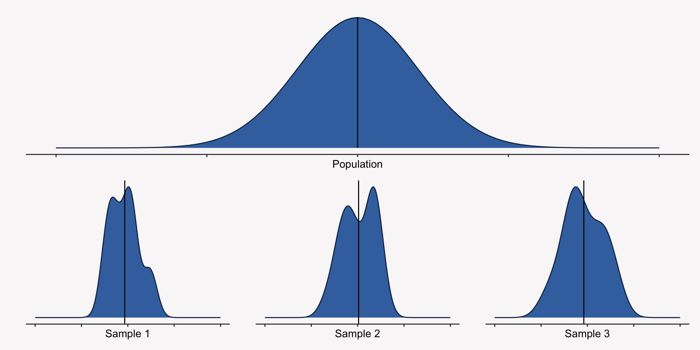
Describing the Center of your Data
One common way to describe your data is to compute a statistic that tells you where the center of your data is—the average or expected value of your data. There are three statistics you can compute:
Mean: The average value.
Median: The value at which 50% of your data lies below it.
Mode: The most common value.
Describing the Center of your Data
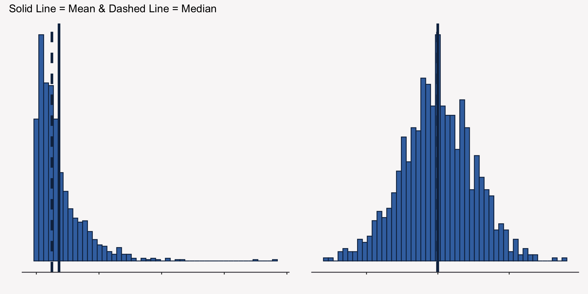
Describing the Spread of your Data
You can describe the spread of your data by computing statistics that tells you generally how far the observations are from the mean of your data. There are three statistics you can compute:
Variance: The average squared distance your data falls from the mean.
Standard Deviation: The average distance your data falls from the mean (square root of variance).
Range: Maximum value minus the minimum value of your data.
Describing the Spread of your Data
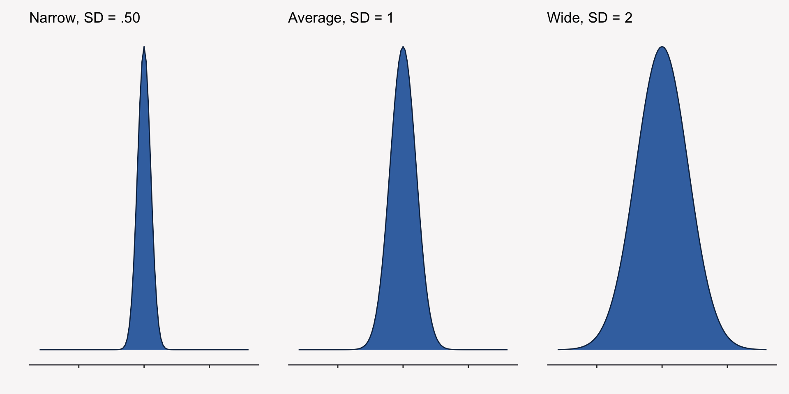
Describing the Shape of your Data
Oftentimes, you will also want to talk about the shape of your data. Typically, this is about how skewed or asymmetric your data is in one direction or how heavy the tails of your distribution are:
Skewness: How long the tails of your distribution are in a given direction.
Kurtosis: How heavy the tails of your distribution are.
Describing the Shape of your Data
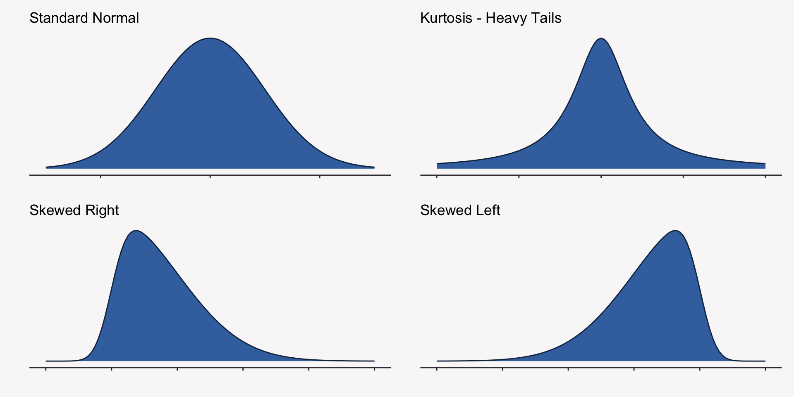
Describing the Relationship between two Variables
We can also describe the linear relationship between two variables by computing either the covariation or correlation between two variables. Both of these metrics tell us the extent to which two variables are linearly related to one another.
Correlation Coefficient
The correlation coefficient is just a standardized version of the covariance statistic with values that range from -1 to 1.
Positive Correlation: High (low) values of one variable, X, are frequently seen with high (low) values of another variable.
Negative Correlation: High (low) values of one variable, X, are frequently seen with low (high) values of another variable.
Probability is the language of uncertainty. Anytime we are dealing with random events such as the outcome of a coin toss or the response to a survey question, we rely on probability to talk about these events.
Probability as a Long-Run Frequency
For an observation of a random phenomen, the probability of a particular outcome is the proportion of times that outcome would occur in an indefinitely long sequence of like observations, under the same conditions.
The Three Rules of Probability
All of probability theory rests on three rules:
\(P(\text{Event}) \geq 0\)
\(P(\text{Any Event}) = 1\)
If two events are mutually exclusive, then the probability of event one or event two happening is equal to \(P(\text{Event 1}) + P(\text{Event 2})\)
A Concrete Example
You’re a Human Capital Analytics researcher at a large, multinational organization and you have access to all of the firm’s HR data over the past fiscal year, which includes three key variables: voluntary_turnover, job_satisfacation, and office_region. Your manager asks you to determine the likelihood that an employee leaves the firm.
A Concrete Example
# A tibble: 20,000 × 3
voluntary_turnover job_satisfaction office_region
<chr> <fct> <fct>
1 active Neutral China
2 active Satisfied Latin Am.
3 active Satisfied North America
4 inactive Neutral North America
5 active Neutral China
6 active Neutral China
7 inactive Neutral Latin Am.
8 active Dissatisfied Europe
9 active Neutral Europe
10 active Dissatisfied Europe
# ℹ 19,990 more rows
Probability of Voluntary Turnover
A quick way to determine the probability of voluntary turnover is to look at the proportion of employees who left the firm in the last year. This proportion is .16, so the \(P(\text{Status = Inactive}=.16)\).
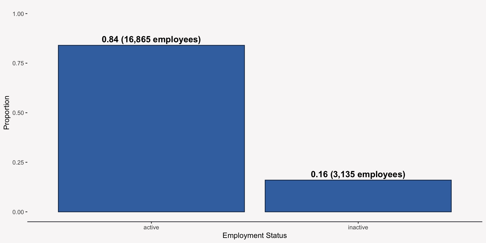
Joint Probability
Joint probability is the probability of some event happening for two or more random variables. For example, what is the probability of employment_status == inactive & job_satisfaction == satisfied?
Employment Status & Job Satisfaction: Joint Probability
active
inactive
Dissatisfied
0.06
0.04
Neutral
0.50
0.10
Satisfied
0.28
0.02
Conditional Probability
Conditional probability is the probability of one event occurring given the occurrence of another event. This is written mathematically as:
which is read as the probability of Event 1 conditional on (or given) Event 2.
Employment Status Given Job Satisfaction: Conditional Probability
What is the probability that an employee’s status is inactive given that they had responded they were dissatisfied with their job on an an earlier attitude survey? What happens to this probability as job satisfaction moves from dissatisfied to satisfied?
active
inactive
Dissatisfied
0.63
0.37
Neutral
0.84
0.16
Satisfied
0.93
0.07
Independent Events
Two events are said to be independent if the probability of one event occurring does not change given the occurrence of the other event:
Office Region & Job Satisfaction: Independent Events
How does the probability of an employee’s job satisfaction response change depending on the region they’re working in? Or does it change?
Dissatisfied
Neutral
Satisfied
North America
0.10
0.59
0.31
Asia
0.11
0.62
0.27
China
0.11
0.59
0.30
EEMEA
0.10
0.59
0.31
Europe
0.09
0.61
0.29
Latin Am.
0.10
0.60
0.29
Random Variables
Whether you realize it or not, we have been talking about voluntary_turnover as a random variable. A random variable is a function of a random phenomenon that maps an outcome of that phenomenon to a real number.
In our example, voluntary_turnover is a random variable that maps the outcome of an employee’s decision to leave or remain with their organization to a real number: 1 or 0.
Voluntary Turnover as a Random Variable
As a random variable, voluntary_turnover maps inactive to 1 and active to 0:
Because the random variable is a function of a random phenomenon, we can still calculate probabilities for the outcome:
\[P(\text{Y}=1)=.16 \\ P(\text{Y}=0) = .84\]
Connecting Probability to Statistics with Random Variables
The big gain from introducing random variables is that we can now apply mathematical and statistical models to the numerical values, and we can use more general probability distributions to describe the distributions of these random variables.
For instance, we can say voluntary_turnover can be modeled using a binomial distribution.
Types of Random Variables: Discrete & Continuous
Random variables, like quantitative variables, can be classified into two broad categories:
Discrete: Separate, distinct outcome values like integers
Continuous: Infinite continuum of possible outcomes
Probability Distributions
Probability distributions are mathematical models that can be used to summarize the random variation in the random variables by specifying the probabilities of all possible outcomes of the random variable.
Modeling Voluntary Turnover with a Binomial Distribution
The Bernoulli distribution is a probability distribution that can be used to model a random variable that has two outcomes. It specifies the probability of the first outcome, 1, as p and the second outcome, as 1 - p:
Probability Mass and Density Functions (PMF & PDF, respectively) are mathematical functions that take the value of a random variable as an input and return the probability of that value occurring as an output. Every statistical model we will use will assume a certain PMF or PDF.
PMF is a probability distribution function for discrete random variables
PDF is a probability distribution function for continuous random variables
Plotting PMFs and PDFs
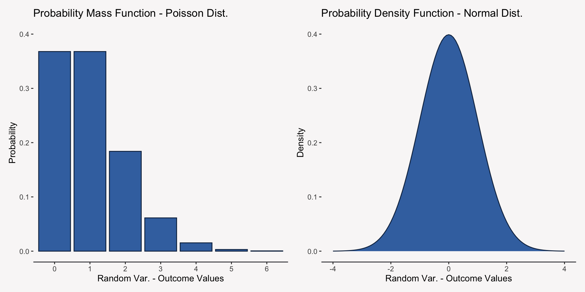
Cumulative Distribution Function
Closely related to the PMF/PDF, the Cumulative Distribution Function (CDF) specifies the cumulative probability that a random variable takes a value, Y, or any value less than Y:
\[F(\text{Y})=P(\text{Y} \leq \text{y})\]
In our example, what is the probability that involuntary_turnover takes a value of 0? What is the probability involuntary_turnover takes a value less than or equal to 1?
Cumulative Distribution Function
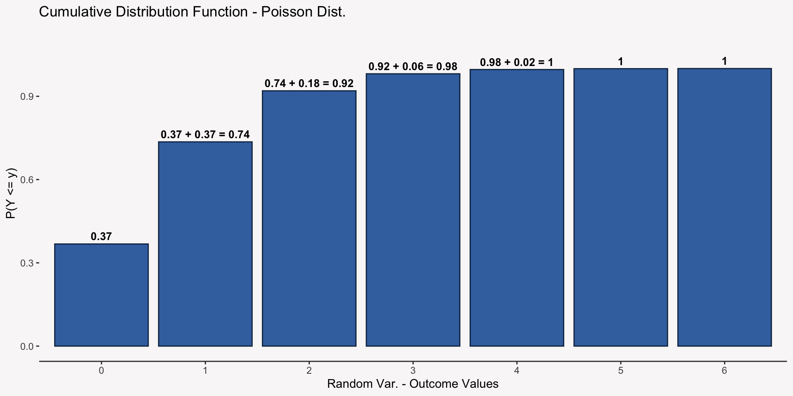
The CDF of the Normal Distribution
Think about the CDF as a way to compute the percentiles of a distribution. What is the 50th percentile—the value where 50% or less of the observations fall—for the Normal CDF below?
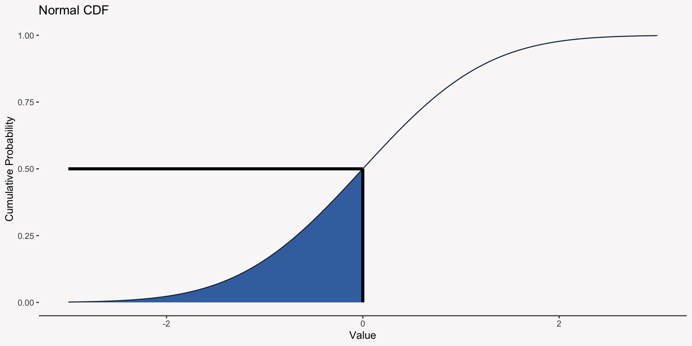
Getting to Know the Normal Distribution Better
It has two parameters: Mean & Variance.
68% of its mass is between \(\pm1\) SDs from its mean, 95% of its mass is between \(\pm2\) SDs from its mean, and 99.7% of its mass is between \(\pm3\) SDs from its mean.
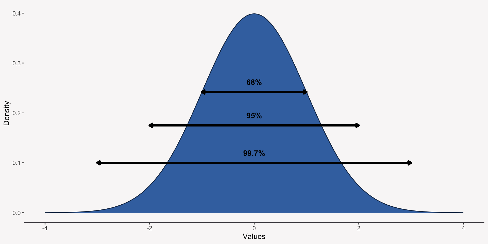
Generalizing from your Data
Inferential Statistics
Usually, when you analyze your data you want to generalize the results from your specific dataset to a broader population or more general phenomenon. This is called statistical inference. We infer something from our data about a more general phenomenon.
Example: Recruiters’ trust in AI
Your organization is considering adopting an AI automated resume scraper program to lessen the burden on the recruiters. Before committing to the tool, however, your manager has asked you to determine if the recruiters would trust the outcomes provided by the AI system.
To assess this, you administer a single survey question to three random samples of 50 recruiters:
I trust the outcome provided by an artificially intelligent system.
Example: Do Recruiters’ trust AI?
To determine how recruiters feel about AI, on average, you compute the mean of each sample and find the following:
sample_1
sample_2
sample_3
3.74
3.76
3.82
The average response is different across the three different samples. Is this expected? What should you do?
Populations & Sample Variation
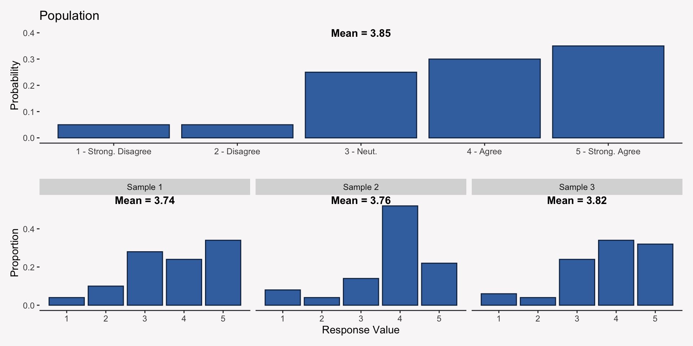
Statistics as Random Variables
Because statistics like the sample mean are computed from a sample that contains random variation, we expect our statistics to behave like random variables. Like a random variable, we can specify a probability distribution for our statistic called a sampling distribution.
Sampling Distributions
Imagine you can draw an infinite number of random samples from a population and then for each sample you compute the sample mean. The distribution of these sample means is referred to as the sampling distribution of the mean.
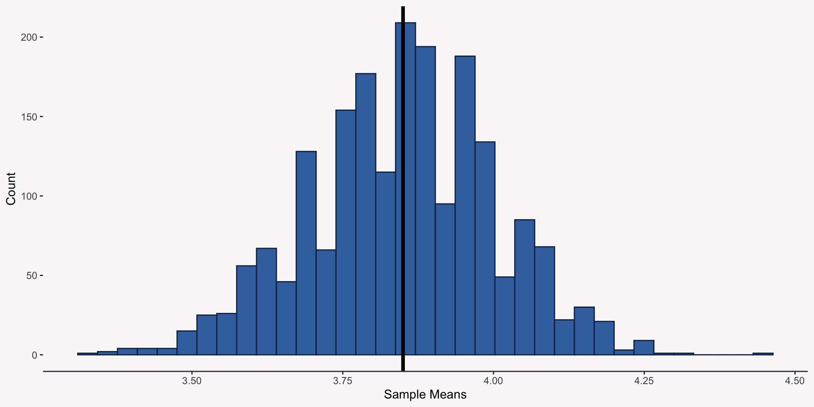
The Mean & Standard Deviation of a Sampling Distribution
Like all distributions, we can compute the mean and standard deviation of a sampling distribution and obtain useful information:
Mean of a sampling distribution = Population Parameter
Standard deviation of a sampling distribution = Uncertainty in our statistic
The Standard Error
The standard deviation of a sampling distribution is known by another name: the standard error. The standard error quantifies our uncertainty in a given statistic and is fundamental to inferential statistics.
For the mean, the standard error can be calculated as:
We can reduce the standard error, thereby reducing our uncertainty, by increasing our sample size:
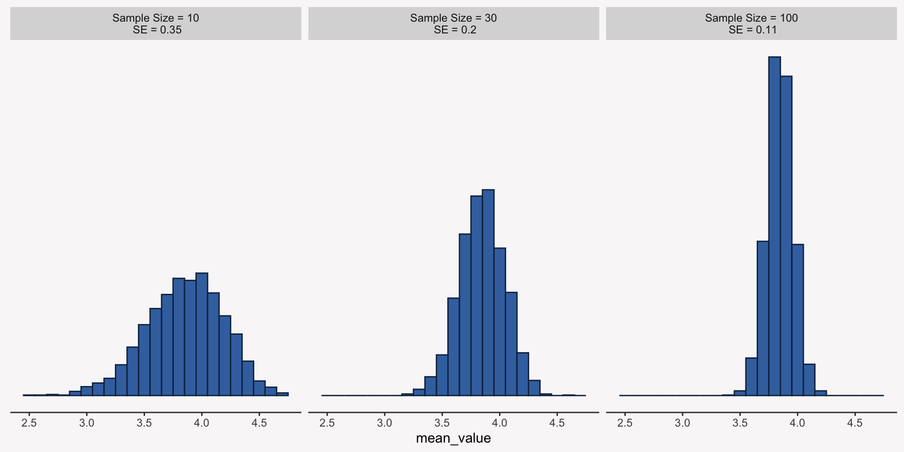
The Norm of Normality: The Central Limit Theorem
The Central Limit Theorem (CLT) is a mathematical finding that tells us that the sampling distribution of a statistic like the mean starts to closely resemble a normal distribution as the sample size increases regardless of the distribution of the sample data itself!
The CLT plays a very important role in all of our statistical inference!
Central Limit Theorem
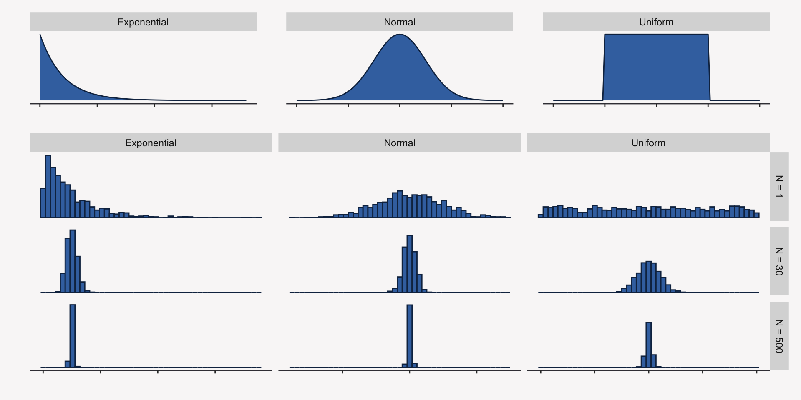
Statistical Estimation & Tests
What is Statistical Estimation?
The goal of every data analytic project is to estimate some population parameter by computing some statistic or point estimate. This is statistical estimation.
Point Estimates & Interval Estimates
Statistical estimates can either come as point estimates or interval estimates:
Point Estimate: A single value that estimates the population parameter.
Interval Estimate: An interval of values centered around the point estimate.
Differences in Recruiters’ trust in AI by Job Experience
Your manager asks you to administer the survey one more time to a larger sample of 300 recruiters, but this time they would like you to measure the amount of years the employee has been in the recruiting industry as a proxy for job experience job_exp. Your manager would like to know if employees’ trust differs based on their level of job experience.
# A tibble: 10 × 2
job_exp trust_in_ai
<fct> <dbl>
1 Low 5
2 Low 3
3 Low 5
4 Low 5
5 High 1
6 High 3
7 High 3
8 High 3
9 Medium 5
10 Medium 5
Plotting your Data
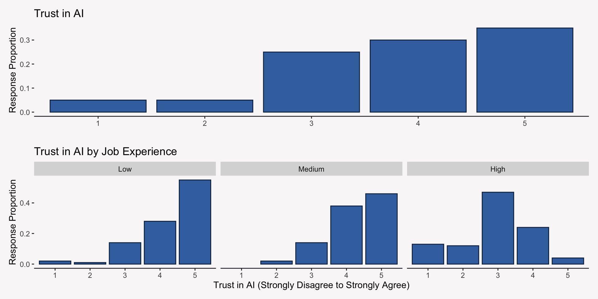
Estimating the Mean & Variance by Job Experience
For each job experience group, we can estimate the population means by computing the sample mean and standard deviation of their responses to the trust in AI question:
Job Exp.
Mean Trust
SD Trust
N
Low
4.33
0.90
100
Medium
4.28
0.78
100
High
2.94
1.02
100
A Confidence (Interval) Estimate for the Mean
Because there is uncertainty in our data, we would like to move away from providing a single estimate of trust in AI for each group and provide an interval of estimates that adequately quantifies the uncertainty we have in our estimate:
Job Exp.
Mean Trust
95% Conf. Int.
SE
SD Trust
N
Low
4.33
4.15 - 4.51
0.090
0.90
100
Medium
4.28
4.13 - 4.43
0.078
0.78
100
High
2.94
2.74 - 3.14
0.102
1.02
100
Interpreting a Confidence Interval
Confidence intervals have a very strict (and kind of odd) interpretation:
If you were to randomly sample a large number of samples from a population and create a 95% confidence interval around the sample mean, then 95% of those intervals would contain the population mean.
Building a Confidence Interval
Generally, to build a confidence interval, you need three pieces of information:
Point estimate to build the interval around
The probability distribution that best approximates the estimate’s sampling distribution (almost always the normal distribution)
The Standard Error of the estimate (the standard deviation of the sampling distribution)
The level of “confidence” (i.e. how confident you are that the population parameter is contained in the interval)
\(\pm 1.96\) is the value at which 95% of the mass of the standard normal distribution falls
SE: The standard error of the estimate
Are the Differences in Recruiters’ trust in AI by Job Experience Real?
We saw that the sample means of trust in AI differed by job experience level, but are those differences real or are they a result of random noise (sample variation)?
We can use a statistical test to determine if the difference we see in the sample means is indicative of true population-level differences.
Stating a Statistical Hypothesis
In statistics, a hypothesis is a statement about the population distribution. Researchers typically formulate two kinds of hypotheses: null hypothesis (\(H_{0}\)) and alternative (researcher’s) hypothesis (\(H_{a}\)).
\(H_{0}\) is a statement that the population parameter takes on some value—usually 0.
\(H_{a}\) is a statement that the population parameters takes on an alternative set of values that fit with the researcher’s theory.
The Direction of a Statistical Hypothesis
Hypotheses can be directional or non-directional.
A directional hypothesis is a hypothesis that makes an explicit statement about whether one group will have a larger (or smaller) mean than another group.
A non-directional hypothesis is a hypothesis that states that the means of the two groups differ, but does not specify which group has a larger (or smaller) mean.
Trust in AI Hypotheses
\(H_{0}\): In this organization, there are no differences between mean-level trust in AI for employees with low job experience and mean-level trust in AI for employees with either medium or high job experience.
\(H_{a}\): In this organization, the mean-level trust in AI for employees with low job experience is higher than the mean-level trust in AI for employees with medium job experience and high experience.
What is a Statistical Significance Test?
A statistical significance test, or just test, uses data to summarize the evidence about a hypothesis, usually the null, by comparing a point estimate of the parameter of interest (e.g. sample mean) to the value predicted by the hypothesis (e.g. 0 in the case of the null hypothesis).
The Four Elements of a Statistical Test
Assumptions: Background assumptions that need to hold for our test to be valid.
Hypotheses: The \(H_{0}\) and \(H_{a}\) hypotheses, which need to be formulated before analyses happen.
Test Statistic: Summary of how far away a statistical estimate is from the population value predicted by \(H_{0}\).
P-value & Conclusion: A decision on whether to reject or not reject \(H_{0}\) if the probability of our data coming from the null population distribution is sufficiently low as measured by a P-value.
A Significance Test for Trust in AI
To determine if trust in AI differs by job experience, we are going to use a z-test to test our two null hypotheses, which can be framed as hypotheses about the mean differences between trust in AI by job experience:
A Z-test is a test that compares the mean of one variable to a specific population parameter specified by the null hypothesis (usually 0) or to the mean of a different variable. To conduct a Z-test you can follow these steps:
Ensure the Z-test assumptions are met.
Set the the probability threshold you need to surpass for an effect to be considered significant—your alpha level.
Compute your test statistic and determine if it is significant at your specified alpha-level.
Z-Test Assumptions
The populations from which the samples were taken from must be normal.
The population SDs must be known or the sample sizes for each group must be large (~30 or more observations per group).
Determing your Alpha-Level
The \(\alpha\)-level, also called the significance level, is a number \(\alpha\) between 0 and 1 such that we reject \(H_{0}\) if the P-value of the test statistic is less than or equal to \(\alpha\).
Generally, we set \(\alpha\) to .05 or .01. To reject the \(H_{0}\), the P-value needs to be less than or equal to .05 or .01, respectively.
Z-Test Test Statistic
When you are comparing two groups to one another, like we are, the test statistic, \(Z\), is defined as:
A P-value is a tricky thing to think about, it is the probability of seeing a value greater than or equal to your test value given that the sampling distribution specified by the null hypothesis is true.
\[P(Z \geq z \space | \space H_{0} )\]
If your P-value is small (usually less than .05), then you can conclude that your test statistic is very unlikely to have come from the null distribution and thus you can reject the null hypothesis.
Visualizing the P-Value
We assume (somewhat safely thanks to the CLT), the our estimate has a normal sampling distribution and according to our null hypothesis of no effect the mean of the normal distribution should be 0 and the SD should be 1. We can use the CDF of the standard normal distribution to compute the P-value.
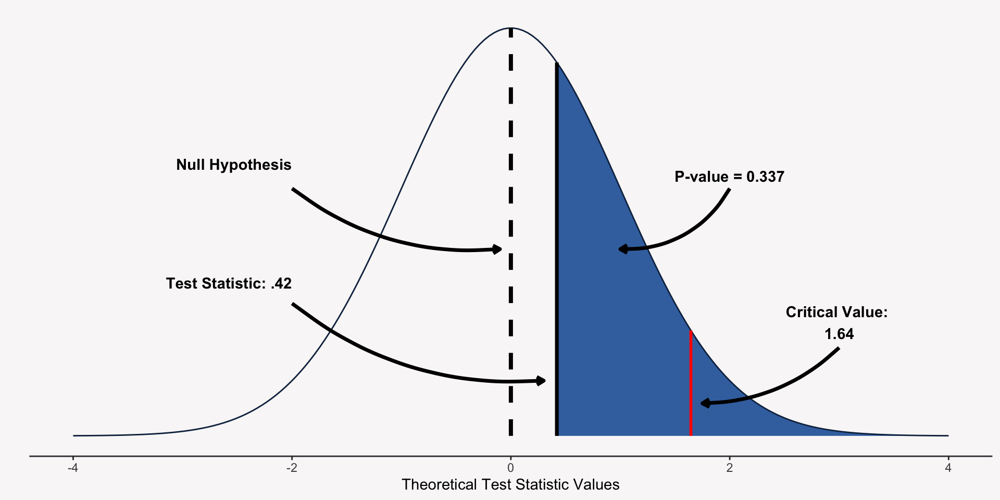
Using R to Conduct a Z-test: Medium Job Experience
low_group <- data$trust_in_ai[data$job_exp =="Low"]medium_group <- data$trust_in_ai[data$job_exp =="Medium"]z_low_medium <- BSDA::z.test(x = low_group, y = medium_group, alternative ="greater",sigma.x =sd(low_group), sigma.y =sd(medium_group) )z_low_medium
Two-sample z-Test
data: low_group and medium_group
z = 0.42005, p-value = 0.3372
alternative hypothesis: true difference in means is greater than 0
95 percent confidence interval:
-0.1457907 NA
sample estimates:
mean of x mean of y
4.33 4.28
Using R to Conduct a Z-test: High Job Experience
low_group <- data$trust_in_ai[data$job_exp =="Low"]high_group <- data$trust_in_ai[data$job_exp =="High"]z_low_high <- BSDA::z.test(x = low_group, y = high_group, alternative ="greater",sigma.x =sd(low_group), sigma.y =sd(high_group) )z_low_high
Two-sample z-Test
data: low_group and high_group
z = 10.203, p-value < 2.2e-16
alternative hypothesis: true difference in means is greater than 0
95 percent confidence interval:
1.16591 NA
sample estimates:
mean of x mean of y
4.33 2.94
Visualizing a Very Small P-Value
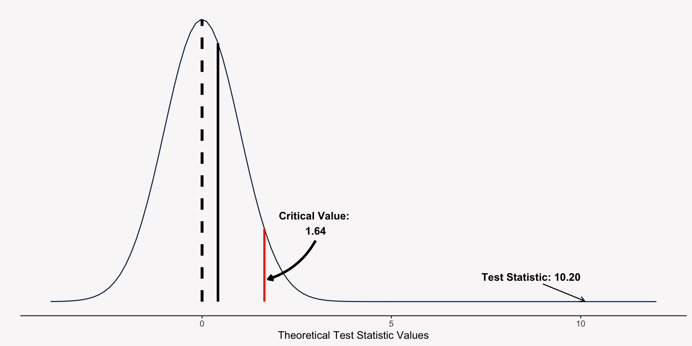
Decision Errors
The conclusion you come to thanks to a statistical test is not guaranteed to be the right one. There is always a risk of making a decision error:
Reject \(H_{0}\)
Do Not Reject \(H_{0}\)
\(H_{0}\) is true
Type 1 Error
Correct Decision
\(H_{0}\) is false
Correct Decision
Type 2 Error
To protect against a Type 1 Error, we can make our \(\alpha\)-level very small, which will make it very difficult to reject \(H_{0}\), but this increases Type 2 Error. One way to guard against Type 2 Error is by using an appropriate statistical test on a large sample of data.
An Introduction to R
First Steps
Download R if you haven’t already
Download RStudio
What is R?
R is a programming language that is generally used for statistical computing.
Why Learn R?
To analyze the data you collect, you will need to be familiar with some kind of general programming language (R, Python, etc.) or a more specific statistical program (SPSS, SAS). I recommend and use R because it is:
Open-source (free to download, use, and improve)
Highly flexible language
Can estimate A LOT of different statistical models
Integrated Development Environment & RStudio
An integrated development environment (IDE) is an application that makes programming a little easier and organized. It includes all of the tools one needs to program effectively and efficiently.
RStudio is an IDE initially developed for R, but it can be used for other programming languages too.
If you have not already, please go ahead and download RStudio from here.
Writing Scripts in R
Just because you can write R code in just about any kind of digital document (Word, Notes, Notepad) does not mean you should!
It is best practice to write your code in an R Script (.R) in RStudio (in my opinion at least).
Using Comments in Your Code
You can write comments in your own code by beginning a line with #. R will not evaluate any text on a line that begins with #.
# This is a comment. Use comments to leave yourself notes in your script.
Programming with Base R
Objects in R
Everything you do in R will involve some kind of object that you have created. Think of an object like a box that you can place data in, so that R can later access and manipulate the data. An important of the code below is the assignment operator <- which is how R knows to assign value to object_name.
object_name <- value
Atomic Vectors
An atomic vector is just a simple vector of data.
R recognizes six types of atomic vectors:
Integers
Doubles (Numeric)
Characters
Logicals
Complex
Raw
Integer & Numeric Vectors
Integer vectors contain only integers. Add L after each number so R recognizes it as an integer. Numeric (doubles) vectors contain real numbers. These are the default vectors for numbers.
Character vectors contain only text data also referred to as string data. Basically anything surrounded by "" or '' is considered string data.
character_vec <-c("1", "abc", "$#2")
Logical Vector
Logical vectors are vectors that can only contain TRUE or FALSE values also referred to as boolean values.
logical_vec <-c(TRUE, FALSE)
Adding Attributes
You can think of attributes as metadata for R objects. As a user you will not need to worry too much about attributes directly, but attributes tell R how to interact with the specific object and allow the user to store information that is secondary to the analyses they are conducting.
Data frames are the best way to structure and store data in R. Data frames are sort of the R equivalent of an excel spreadsheet.
Each column in a data frame is a vector, so a data frame can combine a numeric vector as one column with a character vector as another column.
data_frame_1 <-data.frame(NUMERIC =c(1, 3), CHARACTER =c("a", "b"), LOGICAL =c(TRUE, FALSE))data_frame_1
NUMERIC CHARACTER LOGICAL
1 1 a TRUE
2 3 b FALSE
Viewing Your Data
You can use View() to open up a spreadsheet-like view of your data.
View(data_frame_1)
Selecting Data from Data Frames
You will mainly select data from data frames using one of the two following methods:
data_frame_1[1, 1] # Index the row and/or column
[1] 1
data_frame_1[, 1] # Leaving the column or row index blank selects the whole vector
[1] 1 3
data_frame_1$NUMERIC # Use a $ operator to reference the column name
[1] 1 3
Functions in R
Functions are objects in R that take user inputs, apply some predefined set of operations, and return an expected output.
sum(c(1, 3))
[1] 4
The Elements of a Function
R comes with a variety of predefined functions and they all follow the same structure:
A name for the function.
The arguments that change across different function calls.
The body which contains the code that is repeated across different calls.
The Elements of a Function
name <-function(argument) { body}
Example Base Function
x <-c(1, 4, 6)sum(x)
[1] 11
mean(x)
[1] 3.666667
min(x)
[1] 1
Linking Functions Together
R lets you link any number of functions together by nesting them. R will start with the innermost function and then work its way outward.
sum(abs(c(-1, -1, 1, 1)))
[1] 4
Using the pipe |>
The |> operator allows you to take the output of one function and feed it directly into the first argument of the next function. Using the |> makes it easier to read your code, which is a good thing.
c(-1, -1, 1, 1) |>abs() |>sum()
[1] 4
Packages: The Lifeblood of R
A lot of what makes R such an effective programming language (especially for statistics) is the sheer number of available R packages. An R package is a collection of functions that complement one another for a given task. New packages are always being developed and anyone can author one!
Installing & Loading Packages
You can use install.packages to install a package once and then library to load that package and gain access to all of its functions.
There are a number of different methods to read and write data into R. The two most common functions are:
data <-read.csv("filepath/file-name.csv")write.csv(data, "filepath/file-name.csv")
Importing Data from an R Package
Oftentimes, R packages will come with their own datasets that we can load into R. The peopleanalytics package has many such datasets that we will use today:
data_employees <- peopleanalytics::employees
Getting Help with R
There are two ways to get help in R:
Add ? in front of your function, which will result in RStudio displaying the help page for that function.
Google what you are trying to do. More often than not, someone else has run into your problem, found a solution, and posted it. Stand on their shoulders!
?sum()
Introduction to the Tidyverse
What is the Tidyverse?
The tidyverse is a collection of R packages that “share a common philosophy of data and R programming and are designed to work together.”
Installing Packages from the Tidyverse
install.packages("tidyverse")
tibble: Data frame of Tidyverse
Tibbles are the tidyverse’s version of a data.frame. They can be loaded from the tidyverse package: tibble.
The package dplyr should become your go-to data manipulation and structuring tool! It contains many useful functions that make it surprisingly easy to manipulate and structure your data.
The Philosophy of dplyr Functions
Every function in dplyr follows this philosophy:
First argument is always a data frame.
Remaining arguments are usually names of columns on which to operate.
The output is always a new data frame (tibble).
dplyr functions are also further grouped by whether they operate on rows, columns, groups, or tables.
Using dplyr to Operate on Rows
The following dplyr functions can filter, reduce, or reorder the rows of a data frame: